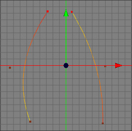
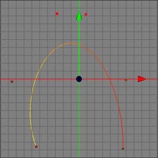

Join Segment Tool
Often you have more than one spline path within a spline object which you want to connect. To do this you have to use the join segment tool. See the images below for an example of where two segments of a Beziere curve are joined.
 
Attention: You can only connect splines which are within the same spline object. If you want to connect splines from two different objects you have to import the splines from the second spline object into the first one with the import child tool.
Modes
The join segment tool is available in all modes. Note that it makes most sense to use it in point mode since you can only see the control points and its selections in point mode. This spline tool only works on raw spline objects.


To use the join segment tool, you first have to choose the paths which should be joined. To do this select from the first path any control point you want. Do the same with the second spline. You now have two segments which have a selected control point. Now apply the menu command "Tools SplineJoin Segment". The two segments will now be joined the following way. The end of the first path will be connected with the beginning of the second path.
SplineJoin Segment". The two segments will now be joined the following way. The end of the first path will be connected with the beginning of the second path.
Keys
- none
Properties
- none